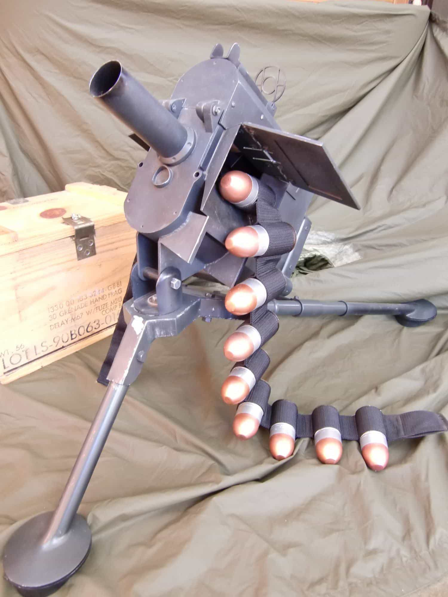
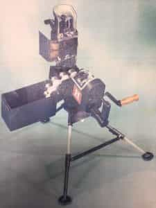
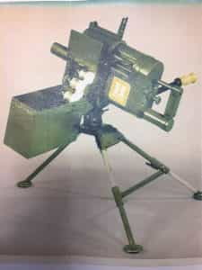
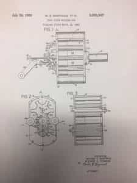
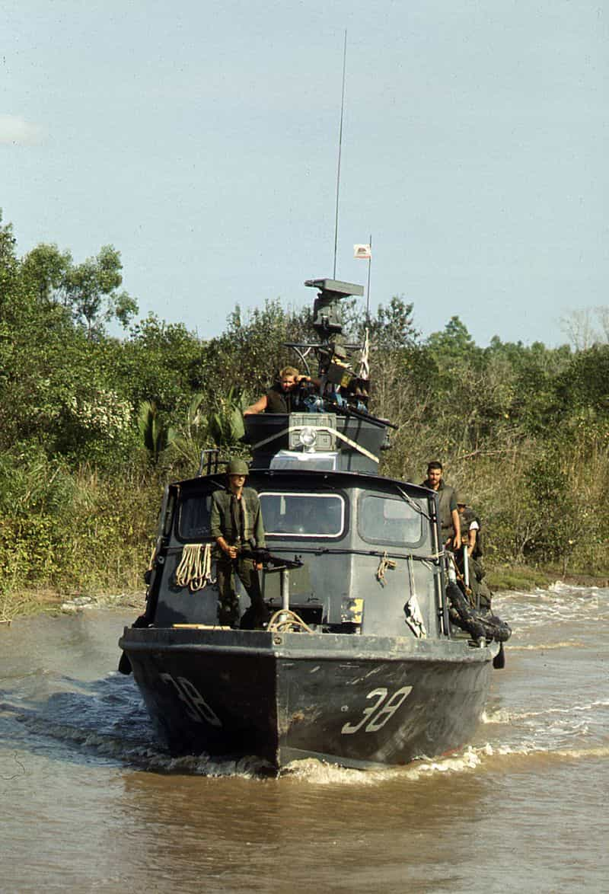
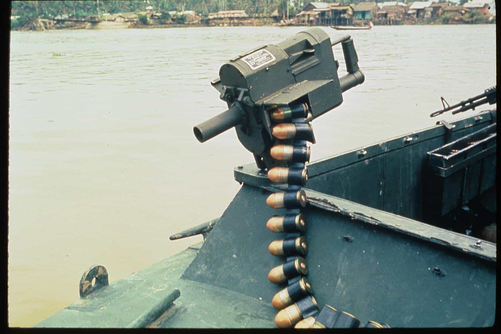
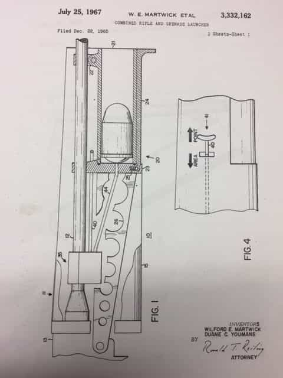
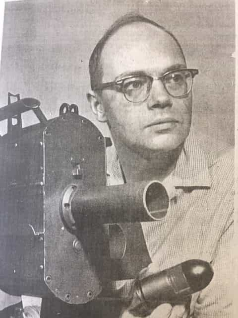

My late father was an inventor and tool & die maker. In the late 1940s, he built stamping dies and tooling for a company that manufactured fishing lures. During his tenure with this company, he invented a fishing lure used for Walleye Pike.
In the late 1950s, he worked for a machine shop where he invented a machine used to remove tree bark off logs for the lumber industry. In 1960, he father went to work for Honeywell Corporation Aeronautical Products Division, Hopkins, Minnesota.
One evening, while still a small boy, I was sitting with my father on the sofa watching a Western movie on television. In the movie, the cavalry was using a Gatling Gun. Unbeknownst to me, my father had an epiphany. It later became the Honeywell MK 18 Hand-Cranked Multiple Grenade Launcher.

The Backstory
During the Vietnam War, the United States military used the M79 Grenade Launcher. The boop gun, as the soldiers in the field called it, was a simple single shot weapon that fired a 40mm grenade.

The United Sates Navy had expressed an interest in rapid-fire weapon that would fire the 40 mm grenade for use on gunboats in Vietnam.
My father presented his concept of a hand cranked rapid-fire grenade launcher to a colleague named Wilford Martwick. Martwick was a brilliant engineer who had previously worked for Boeing. He got the project approved, and he signed off on it.
  
Initially, the director of marketing expressed his disapproval of the MK 18. He said in a meeting that the MK 18 would never sell, and if it did, he would eat his hat.
The design the two men came up with was a rotary split breech that used straight through feeding of ammunition. This eliminated the need for a reciprocating bolt, extraction of ammunition from a belt, and extraction of ammunition from a chamber. The weapon would fire at a variable rate of up to 250 rounds per minute at ranges from 300 yards to 2,000 yards. Two rounds were fired per each full crank revolution, and the weapon loaded at the three and nine o’clock positions.
The firing sequence was at the six and twelve o’clock positions. A three-position knob was located at the rear of the gun for fire, safe and load. It used a 48 round ammunition box. The ammunition belt was Dacron impregnated with Mylar, and then heat-sealed. A metal fork located the belt, a shuttle spread the belt apart, and metal fingers opened the pocket in the belt to receive the round. This was accomplished in a fraction of a second. The empty shell casings remained in the expended belt.
My father, and Martwick, built the first model on their own time, and used spare parts. I remember my father spending many late nights in his basement workshop. I often fell asleep listening to banging and clacking as my father ran dummy rounds through the launcher.
Between 1965-1968, Honeywell manufactured 1,200 of the MK 18s. Typically mounted on top of the dual .50 caliber M2 Browning machine guns on the stern of the gunboats, the weapon proved to be deadly against the Viet Cong. The pivoting motion of the MK 18 allowed rapid-fire and maximum coverage area with 40 mm fragmentation grenades. It could also be mounted on a standard tripod for use at firebases and bunkers.


Yet Another Invention
In 1965, my father and Martwick had lunch in the company cafeteria to discuss ideas. My father proposed a single shot grenade launcher mounted on the M16 rifle. They went to work developing the weapon. Both men’s names appeared on the patent. Honeywell then sold the patent to Colt Industries. In 1969, the M203 Grenade Launcher was born.

In 1968, my father decided to leave Honeywell. He saw the Vietnam War winding down. The MK 19, a fully automatic grenade launcher, replaced the MK 18.

My father, with his invention
Years later, I met a Vietnam War veteran who served as a River Rat in the Brown Water Navy in 1967. He asked me if I was a relative of the man who had invented the MK 18. When I told him that that man was my father, the veteran told me of the times he used the MK18 in firefights against the Viet Cong while patrolling the Mekong River.
My father died in 2009. Prior to his death, I had the opportunity to learn his story of the MK 18. And what became of the director of marketing who said the MK 18 would never sell? The day the United States Navy awarded the contract to Honeywell, they had a party. A cake shaped like a hat was presented. The director of marketing had to cut the first piece and eat it. I guess he did have to eat his hat after all.
Read More: The History And Evolution Of Rifles